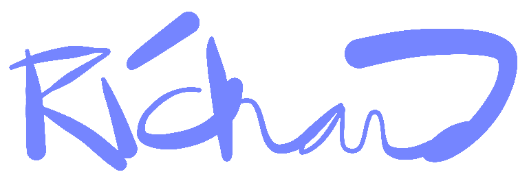

Hello world, I’m a photographer and graphic designer currently working in the field of blindness and disabilities. In my career I have made a wide range of images — portraits, still-life, product photos, event photos, corporate pictures, disability pictures. I’ve also done a bit of work in video and graphic design. My pictures are on a website called Glass, which is sort of like Instagram and Flickr. My email address is irvine@hey.com. Thanks for stopping by.
